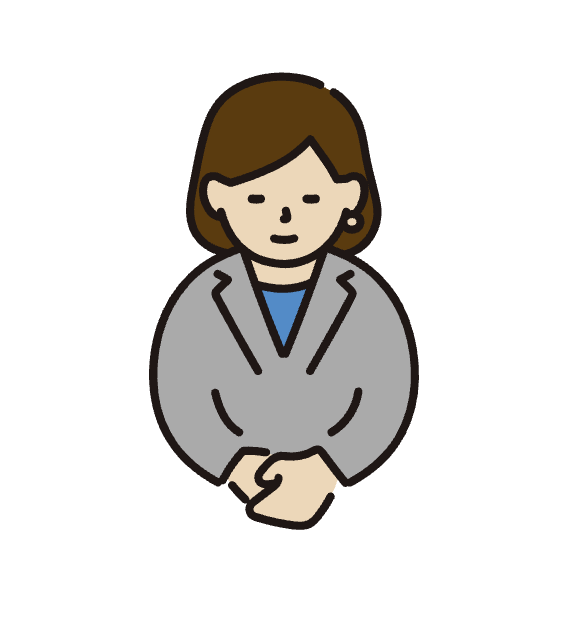

機械学習・生成 AI の研究開発に携わるエンジニアです。 最新の LLM を活用したプロダクト開発から、MLOps 基盤の設計・構築まで幅広く対応しています。

大学院で自然言語処理を専攻後、AI スタートアップにて研究エンジニアとして従事。 現在は LLM を活用したプロダクト開発を中心に、RAG・Fine-tuning・MLOps 基盤の設計まで幅広く担当しています。
「技術の力で、人の創造性を解放する」をモットーに、エンジニアリングとデザインの両面からプロダクトを磨き上げることを得意としています。
社外では OSS 活動や技術同人誌の執筆、AI 勉強会での登壇なども積極的に行っています。